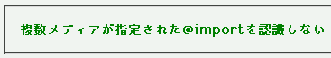
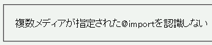

複数のメディアタイプが指定された@import宣言を認識しないために、スタイルシートがインポートされない。
インポート文：
@import "b004a.css" screen,print;
インポートしたスタイルシート内の記述：
p.sample {
color: green;
font-weight: bold;
}
複数メディアが指定された@importを認識しない
screenメディアが指定されています。スタイルシートがインポートされていれば、文字列は緑色の太字で表示されるはずです。
Moz1.0での表示
Opera6.05での表示
バグのためにインポートされないのではなく、仕様上サポートされていないために起きる現象と考えられます。
なお、この現象を用いると、Operaに特定のスタイルを反映させないようにすることができる可能性があります。
Opera6.05ではスタイルシートがインポートされません。Opera7.0ではインポートされます。